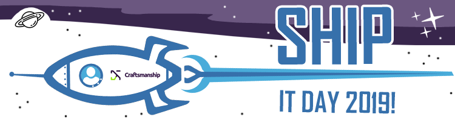

Home

Newest projects:Owner(s):
{{owner.firstName + " " + owner.lastName}}
{{project.title}}{{project.description}}Technologies: {{project.technologies}}Members:
{{member.firstName + " " + member.lastName}}
About Ship It DayShip IT Day is an internal hackathon which gives you an
opportunity of showing your creativity and skills, getting to know other employees, exchanging experience and
having fun, for which you might not have time in other circumstances.
On April the 3rd in Business Garden Wrocław and Business Garden Poznań you and your team will have a chance
to create/design/test/play around with a tool which you would like to implement or get to know more. Some of
them could be later developed and used in our company.
Ship IT Day is open for any kind of technology project.
Rewards for winners!
Create an account and register a project or join an existing one!
Regulations
Every employee from Wrocław and Poznań can participate in this event.
Apply using this application - register your own project or join an existing one.
Build a group of 1-5 people.
We have limited number of spots: 42, so if more people sign up, we will choose projects selected for further development.
We will provide lunch and snacks during the hackathon on April the 3rd.
It is required to have an approval for participation from your PDL and Project Lead.
When applying for the event you agree to be photographed and filmed during the event.
For more details, calendar, information meetings visit our website